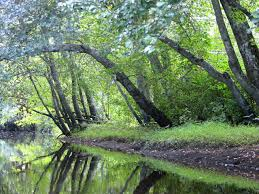
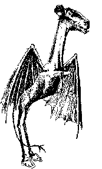

When taking a trip to Pine Barrens, people can go camping and all around are little back roads surrounded by woody areas. Some people when visiting, don’t realize that the New Jersey Devil exists, which makes the trip even more exhilarating. Camping in this spooky place alone is not a great idea, so take your family with you! If you are in for a spooky Halloween family trip, Pine Barrens, New Jersey is the best place to be. Anything is possible in these woods, so hopefully you can come back and tell me the story, and whether you encountered the New Jersey Devil.
Canoeing in Pine Barrens, New Jersey, is a lot of fun! Bring family and friends to this wonderful place for an amazing and memorable adventure!

Kayaking is another way to enjoy your time at Pine Barrens. Taking a trip down the Batsto River is a wild extravaganza!

The New Jersey Devil is the show of Pine Barrens New Jersey. There are New Jersey Devil hunts that you take part in that are horrifying and so scary that the devil will try to trick and trap you to come back for more.
Other Things To Do Around the Area
Saturday, October 27: Smithville Monster Bash and Zombie Walk.
Tuesday, October 30: You can celebrate Mischief Night with Weird New Jersey publishers when they visit Barnes and Noble store at the Monmouth Mall in Eatontown from 6pm until 9pm.
People in New Jersey take Halloween very seriously. If you and your family want to go out for a little drive, you can take a cruise through the neighborhoods and look at all of the scary houses! Who knows, something might even pop out at your car!!!
At Pine Barrens itself, you can also go deer or duck hunting in the woods! Right now is the perfect time for hunting season, so go, get out there!
Most importantly, you can search for the New Jersey Devil!
Personal Reviews
"Just relaxing by the campfire, listening to music and stories with no cell phones. Then walking through the pinelands with our guide and only the moon to light the way. It was a lot of fun!" - Ann43
"The trip down the Batsto River was unlike any kayaking I’ve ever done--every bend offered an unexpected surprise: turkeys, pine warblers, muskrat, and wood ducks!"- EvanAuken
"The Pine Barrens was one of the most frightening experiences of my life. I usually do not get scared, but boy was I scared! I, had an encounter with the New Jersey Devil, and I have no words. But know I don’t have a choice, I have to go back! You should come with me too!" - RiverBend